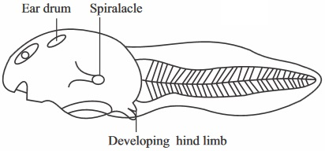

New Senior School Biology Practical Activity & Work Book 3
Chapter
6
DEVELOPMENT OF NEW ORGANISMS FRUITS AND SEEDS
Notable Concepts
Organism development (complete and incomplete metamorphosis)
Fertilization and development of zygote in animals and flowering plants
Germination.
Fruits and seeds.
Background Information
In sexual reproduction, development of a new individual of species begins with the zygote after fertilization has taken place. The zygote after undergoing certain processes which included cell division and cell differentiation grows into an embryo which eventually grows and develops into a new organism
In oviparous animals, the young ones are hatched from the eggs, in such organism, the new organism can undergo several other changes in stages before it can be like the adult in form and structure.
This is called metamorphosis. In some others, where the eggs hatch into a miniature (adult) an organism that looks like the adult. It is called incomplete metamorphosis, but if it hatches into a larva, it undergoes complete metamorphosis. In most mammals where viviparity occurs, the young ones develop into feotus in the womb before they are born, after birth they begin to develop into infant stage, adolescence stage and full grown adult.
Development of new Organisms in insect
1. The life cycle of a grasshopper, and butterfly.
The Insect
Mating and fertilization
Egg Laying
Metemorphosis
1. Grasshopper
A male grasshopper uses sound to attract a female. He rubs the thighs of his hind legs against his fore wings to produce the sound.
Apenis like structure introduces a sperm consisting sac into the female reproductive tract.The sperm reaches the sperm pouch inside the Abdomen of the female where they are stored. The eggs are fertilized by the sperm as they pass through the sperm pouch during the time they are being laid.
The female deposits the eggs in a hole. It produces a sticky substance which is to form a protective covering around the eggs. The whole structure in which the egg is contained is called egg pod.
Within about 2 to 3 days, in the presence of sufficient warmth and moisture,the eggs hatch out the nymphs. The nymphs are light brown with a measurement up to 6mm in length.They look like the parent although they are wingless. This is a case of incomplete metamorphosis.
2. Butterfly.
Here both visual and smell signals are used to attract each other for mating. The male hassexual attractants on their wings while the female release chemicals, posses colour pattern and flight behaviour. These are what it uses to attract the males
After a courtship flight, which lasts within a short time, the male hold the female abdomen with his claspers.Fertilization occurs internally like case of the grasshopper.
The egg is spherical and whitish. It is laid on the upper surface of young leaves of citrus plants. The eggs are laid one by one and glued with cement to the leaf surface.
The egg hatches into larva (caterpillar) which develops into a pupa and then from pupa to adult. This is a case of complete metamorphosis.
fig5.8: Life History of a Butterfly
Development of New Organism in Frogs or Toads
A - Egg
B Embryo
C One day after hatching
D Three weeks old
E One Month old

F Two Months old
G Three months old
H Adult frog
Development of young Ones in Humans.
After fertilization at the upper part of the oviduct, It takes around days 14 – 21 of the menstrual cycle for the zygote formed to be developed into an embryo and get implanted in the uterus. This stage is the pregnancy stage and as the embryo grows, the uterus becomes bigger to contain it. The embryonic membranes, amnion and chorion begin to form. Within 10 – 12 weeks, all major organs are formed in the embryo and from that time onwards the embryo becomes a foetus.
fig6.3a: Uterus during pregnancy
Placenta:
This is a disc shaped structure formed where the chorionic villi is embedded in the uterine endometrium tissue. It is linked to the foetus by the umbilical cord.
Arteries from the foetus move through the umbilical cord to the placenta, in the villi of the chorion, there are capillaries which branch from this artery. Materials pass from the blood into the capillaries in the villi. Umbilical veins carry the blood to the foetus.
The circulatory system of the feotus (embryo) is separate from that of the mother. The (foetus) embryo's blood stays within the capillaries of the chorionic villi as illustrated or shown in figure5.4. The blood stream of the foetus and that of the mother do not mix.
General Questions
1. After fertilization, a zygote is formed which develops into after a few days
2. A development that involves these steps
Egg → Larva → Pupa → Imago is a case of phase of development in an organisms called
3. The whole structure containing the egg in the geasshopper is called
4. The eggs of a cockroach hatches out into a which looks like the adult except that it is wingless.
For question 5 – 9 write down in the spaces provided what the larva of eachof the insects are called.
Insects
Larva
Mosquito
Butterfly/Moth
Housefly
Weevil/Beetle
Ant, bee, wasp
10. Development or metamorphosis of amphibians is controlled by the hormone
11. At what stage of development of a toad does the coiled intestine appear ?
12. Write two functions of the jelly covering in the egg of a toad
fig6.6a: A
fig6.6b: B
13. What stages of development of a frog is shown in the figure 5.8 a and b above ?
14. At what stage of development in a frog does it breath like a fish?
15. The caterpillar has
pairs of spiracles.
16. The structure called Osmeterium in caterpillar is for
feeling on leaves
breathing
defence when the caterpillar is disturbed
fig6.6c:
18. Label the major parts of the diagram of the pupal stage of a butterfly shown above
19. How many times does a female Tse-Tse fly need to mate in a life time
For questions 20 – 26, write into the space provided in the table, the type of metamorphosis carried out by each of the insects in the table.
Insects
Type of metamorphosis
20
Housefly
21
Mosquito
22
Cockroach
23
Aphids
24
Tsetsefly
25
Termites
26
Rice weevil
Diagram of the Amniotic egg of a chicken showing its development
fig6.6d:
fig6.6e:
Use the diagram to answer question 26 to 28
Label the: (26) air space; (27) The amniotic fluid; (28) The embryo.
29. In mammals, the baby receives nourishment from the mother through the
30. The two hormones that are involved in labour which results to birth are
and